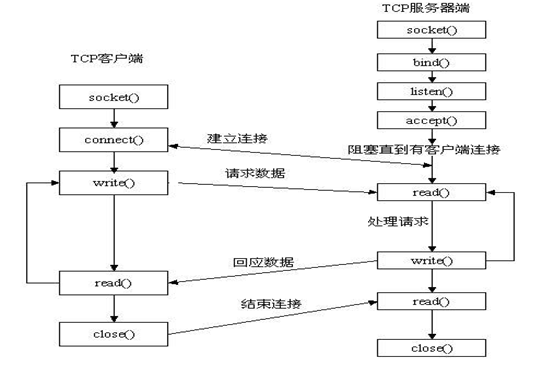

耦合其实就是程序之间的相关性。
程序之间绝对没有相关性是不可能的，否则也不可能在一个程序中启动，如下图：

这是一个Linux中socket TCP编程的程序流程图，在图中的TCP服务器端，socket()、bind()接口、listen()接口、accept()接口之间肯定存在着相关（就是要调用下一个接口程序必需先调用前一个接口），也就是耦合，否则整个TCP服务器端就建立不起来，以及改变了bind()中的传入的数据，比如端口号，那么接下来的listen()监听的端口，accept()接收连接的端口也会改变，所以它们之间有很强的相关性，属于紧耦合。所以耦合就是代码的相关性，如果还不明白，也没关系，继续看下去，相信你会懂的，哈哈。
（1）数据之间耦合
在同一个结构体或者类中，如：
typedef struct Person
{
int age;
char* name;
}Person;
class Person
{
private:
int age_m;
bool namePresent_m;
std::string name_m;
};
在上面的结构体和类中，年龄和名字两个基本数据单元组合成了一个人数据单元，这两个数据之间就有了耦合，因为它们互相知道，在一些操作中可能需要互相配合操作，当然这两种数据耦合性是比较低的，但是namePresnet_m是判断name_m是否存在的数据，所以这两个数据之间耦合性就高很多了。
（2）函数之间的耦合性
函数如果在一个类中也会互相存在耦合性，比如下面例子：
Class Person
{
Public:
Int getAge(){return age_m;};
Void setAge_v(int age){age_m = age;};
Std::string getName(){return name;};
Void setName(std::string name){name_m = name;};
Private:
Int age_m;
Std::string name_m;
};
其中的getAge()和setAge_v()接口操作的是同一个数据，能够互相影响，存在着很明显的耦合，但是getName()和getAge()两个接口相关性就不明显的，但是也会存在耦合性，因为getName()能够访问的类中数据，getAge()也能访问，如果程序员编写代码不注意，也会把在两个接口中调用到了相同数据，互相造成了影响。
除了封装在一个类中的函数之间有耦合性，外部的函数也会根据业务需要产生耦合，比如刚开始说的网络编程的例子中，socket()、listen()、bind()、accept()之间就产生了很强的耦合。
以及在两个类中，比如：
Class Fruit
{};
Class Apple:Fruit
{};
Class FruitFactory
{
Public:
Furit* getFruit(){Fruit* fruit_p = new Apple(); return fruit_p; }
};
Class Person
{
Public:
Void eatFruit(Fruit* furit);
};
FruitFactory fruitFactory;
Fruit* fruit = fruitFactory.getFruit();
Person person;
If (fruit != NULL)
{
person.eatFruit(fruit);
}
上面的FruitFactory和Person两个类之间产生了数据耦合，而getFruit()和eatFruit()两个接口之间也产生了耦合。
（3）数据与函数之间的耦合
从(2)中的程序也能看出，eatFruit()这个接口和Fruit这个数据产生了耦合，如果不先创建Fruit，那么接下来的eatFruit()操作也没有意义，如果强制调用，甚至可能造成程序崩溃，产生coredump。
上面例子的耦合还是比较明显的，有一些不明显的耦合，如下：
Speaker speaker;
speaker.PowerOn() ;
speaker.PlayMusic() ;
表面上是 PlayMusic()对PowerOn()有依赖性，是函数之间的耦合，但背后的原因是 PowerOn()函数让播放器处于通电状态:
PowerOn(){
this.isPowerOn = true;
}
//只有通了电，播放器才能正常播放音乐
PlayMusic() {
if(this.isPowerOn)
Play();
}
这两个函数是通过 this .isPowerOn 这个数据进行沟通的 。 这本质上还是数据和函数之间的耦合。
经常听到“解耦”这个词，那是不是耦合都是不好的？
这个要根据代码的耦合性特点来分析，首先看一下下面几个问题吧，看完，相信大家也有答案了。
（1）耦合可以消除吗？
经过上面那么多例子，大家也意思到耦合无处不在，所以是不能消除的。
（2）那既然不能消除，那解耦的意思是什么？
解耦就是降低程序模块之间的耦合性。
（3）那解耦的目的是什么?
解耦的目的是为了增强一个模块的可移植性、可复用性，就像人的肾可以移植，但是血管却移植很难移植，为什么，因为血管这个“模块”和身体这个“系统”之间的“耦合性”太强，关联地方太多，移植工作量超大。以及减少模块与外部模块的关联，内部模块的修改对外部影响比较少，这也和用人的肾移植和血管移植类似，每个器官中都有血管，一旦移植，所有器官都要动，耗时耗力。
那可移植和可复用有什么好处？比如我们用程序在电脑写出了一个俄罗斯方块的游戏，后来客户也要在手机端做这个游戏，这时候就能够复用电脑端的俄罗斯方块的游戏策略和逻辑，只需要把界面替换掉就行，业务和策略部分基本不用修改，如果电脑端的游戏界面和业务逻辑的程序“浑然一体”，那几乎就需要重新翻新一遍。
（4）那所有程序都需要解耦吗？
不是的，有些时候，我们反而需要增强程序的耦合性，这就是平时说的“高内聚，低耦合”，其中的内聚其实也是耦合，或者说程序的相关性。如下面例子：
在界面上的不同位置要显示多种不同的图形，如三角形、正方形等 ，这里所有的信息浓缩在下面两个数组里 。
一个是 shape 数组 ： ｛ ”三角形”，”正方形＂，”长方形”，＂菱形”｝ 。
一个是 position 数组 ： ｛ pointl, point2 , poin口 ， point4 ｝ 。
两个数组的元素个数是一样多的，它们是一对一的关系 。 比如， 第一个 positio口就是第一个 shape 的位置信息 。 那么代码如下：
for(int i = O; i <count, i++）｛
Draw(shape[i] , position[i]);
}
这样做方便但不好！它会为以后的修改埋藏隐患 。 因为两个数组元素之间的对应关系，并没有得到正式承认。这时候就需要增强它们之间的关联，把隐式的关联转成显式的关联。如下：
Dictionary die = {“三角形”： pointl,
“正方形”： point2 ,
“长方形”： point3 ,
“菱形” ： point4 } ;
//Draw()函数再也不用担心会画错了
foreach(var item in dic){
. Draw(item.key,item.value);
}
平时编程中使用的结构体和类封装也是同样，把一些有关联的数据和方法组合起来，显式增强它们之间关联性，方便使用和移植。
（1）贯彻面向接口编码的原则
程序不可能没有改动的，但是尽量把改动放在一个模块的内部，接口不要变，就算需要改变，最好使用适配器模式增加一个适配程序。因为接口就是一个程序与外部的关联处，保持接口不变，就是保持该模块和外部模块的耦合性不变，这样才能保证它的可移植性可重用以及不被外部模块的修改而影响。
（2）保证一个模块的可测试（单元测试）
如果一个模块是可以单独进行单元测试的，意味着它可以移植到其他程序上，耦合性低。
（3）可以学习一下设计模式的设计思想。
（4）让模块对内有完整的逻辑
解耦的根本目的是拆除元素之间不必要的联系，一个核心原则就是让每个模块的逻辑独立而完整。其中包含两点，一是对内有完整的逻辑 ， 而所依赖的外部资源尽可能是不变量；二是对外体现的特性也是“不变量”（或者尽可能做到不变量），让别人可以放心地依赖我。有的函数光明磊落，它和外界数据的沟通仅限于函数的参数和返回值，那么这种函数给人的感觉可以用两个字形容：靠谱。它把自己所需要的数据都明确标识在参数列表里，把自己能提供的全集中在返回值里。如果你需要的某项数据不在参数里，你就会侬赖上别人，因为你多半需要指名道姓地标明某个第三方来特供；同理，如果你提供的数据不全在返回值和参数里，别人会依赖上你 。有的函数让人觉得神秘莫测，规律难寻：它所需要的数据不全部体现在参数列表里，有的隐藏在函数内部，这种不可靠的变量行为很难预测；它的产出也不集中在返回值，而可能是修改了藏在某个不起眼角落里的资源。 这样的函数需要人们在使用过程中和它不断地磨合，才能掌握它的特性。前者使用起来放心，而且是可移植、可复用的，后者使用时需要小心翼翼 ，而且很难移植。
实例一
在上面介绍的一个例子：
PowerOn(){
this.isPowerOn = true;
}
//只有通了电，播放器才能正常播放音乐
PlayMusic() {
if(this.isPowerOn)
Play();
}
这里的PowerOn()接口和PlayMusic()接口在同一个类中，isPowerOn变量是内部私有变量，这样写法是没问题。如果isPowerOn是一个全局变量，而PlayMusic()接口中程序相对复杂一些，可能就会在外部调用时候忘记了先调用PowerOn给isPowerOn设置为true。为了让PlayMusic()的接口逻辑独立而完整，就需要显式给PlayMusic()传入isPowerOn参数，如PlayMusic(bool isPowerOn)，即使是在一个类中，为了防止在外部调用时建议在使用PlayMusic()前添加一个判断isPowerOn接口，如：
Speaker speaker;
If (speaker.isPowerOn())
{
speaker.PlayMusic();
}
这样在后来有人修改该部分程序时，知道先通电在播放音乐。
实例二
一个人要读书 ：
Person person = new Person();
person.ReadBook(book);
//ReadBook 函数里的逻辑如下：
void ReadBook( Book book) {
//要求人看书之前要先戴眼镜，所以第一步必须是戴眼镜的动作
WearGlasses(this.MyGlasses) ; //Person类中有一个名为 MyClasses的成员
Read (book) ;
如果这个人没有眼镜,this.myGlasses 变量为
null ，直接调用person. ReadBook(book）；会出现异常，怎么办呢？
优化一：通过成员函数注入
于是打个补丁逻辑吧，在 ReadBook 之前先给他配副眼镜 ：
person.setMyGlasses(new Glasses()); //先为person 配副眼镜
person.ReadBook(book);
如上，加上了 person.setMyGlasses(new Glasses())；这行代码,这个 bug 就解决了。 可解决得不够完美，因为这要求每个程序员都需要记住调用 person.ReadBook(book）之前，先给成员赋值：
person.setMyGlasses(new Glasses());
这很容易出问题。 因为 ReadBook是一个 public 函数，使用上不应该有隐式的限定条件。
优化二：通过构造函数的注入
我们可以为 Person的构造函数添加一个 glasses 参数：
public Person (Glasses glasses) {
this.MyGlasses = glasses ;
}
这样， 每当程序员去创建一个 Person 的时候，都会被逼着去创建一个 Glasses 对象 。 程序员再也不用记忆一些额外需求了。这样逻辑便实现了初步的 自我完善。
当 Person类创建得多了，会发现构造函数的注人会带来如下问题 ： 因为 Person 中的很多其他 函数行为，如吃饭、跑步等，其实并不需要眼镜，而喜欢读书的人毕竟是少数，所以person.ReadBook(book）；这句代码的调用次数少得可怜。为了一个偏僻的
ReadBook 函数，就要让每个Person都必须配一副眼镜（无论他读不读书），这不公平。也对，我们应该让各自的需求各自解决。
那么，还有更好的方法吗？ 下面介绍的“优化三”进一步解决了这个问题。
优化三：通过普通成员函数的注入
于是可以进行下一步修改：恢复为最初的无参构造函数，并单独为 ReadBook 函数添加一个glasses参数：
void ReadBook(Book book , Glasses glasses ) (
WearGlasses(glasses);
Read (book);
对该函数的调用如下 ：
person.ReadBook(book , new Glasses ());
这样只有需要读书的人，才会被配一副眼镜，实现了资源的精确分配。
可是呢，现在每次读书时都需要配一副新眼镜：new Glasses()，还是太浪费了，其实只
需要一副就够了 。
优化四：封装注入
好吧，每次取自己之前的眼镜最符合现实需求 ：
person.ReadBook(book,person.getMyGlasses()) ;
这又回到了最初的问题：person.getMyGlasses()参数可能为空 ，怎么办？
干脆让 person.getMyGlasses()封装的 get 函数自己去解决这个逻辑吧：
Glasses getMyGlasses(){
if(this.myGlasses==null)
this.myGlasses ＝new Glassess();
return this.myGlasses;
}
//然后返回到最初的ReadBook代码。ReadBook里的逻辑是默认取自己的眼镜
void ReadBook(Book book) {
WearGlasses(this.getMyGlasses()) ;
Read(book);
}
对 ReadBook 函数的调用如下 ：
person.ReadBook(book);
这样每次读书时，就会复用同一副眼镜了，也不会影响 person 的其他函数。
嗯，大功告成了。最终的这段ReadBook代码是最具移植性的，称得上独立而完整。
可以看到，从优化一到优化四，绕了一圈，每一步修改都非常小，每一步都是解决－个小问题，可能每一步遇到的新问题是之前并没有预料到的。优化一到优化三分别是3种依赖注入的手段：属性注入、构造函数注入和普通函数注入。它们并没有优劣之分，只有应用场合之分，这里我们是用一个案例将它们串起来介绍了。同时大家通过这个小小的例子也可以体会到：写精益求精的代码，是需要工匠精神的。让每一个模块独立而完整，其内涵是丰富的
。 它把自己所需要的东西全列在清单上，让外界提供，自己并不私藏。这意味着和外界的关联是单向的，这样每个模块都变得规规矩矩，容易被使用。如果模块要被替换，拿掉时也不会和周围模块藕断丝连
。
没有绝对好的程序，了解耦合性只是为了写出比较好的程序，但是在写程序中过于执着于耦合性，反而不美。不过，平时编写程序时候也要注意和思考，慢慢就能获得一些“感觉”，也就养成了良好的编程习惯。
写出好代码的途径，一是要有一定的知识积累，多看看书，站在前人的肩膀上，不仅仅是代码数量积累，二是对代码进行审计，审计自己代码找出自己一些不好的代码编写习惯，以后有意识去更改。